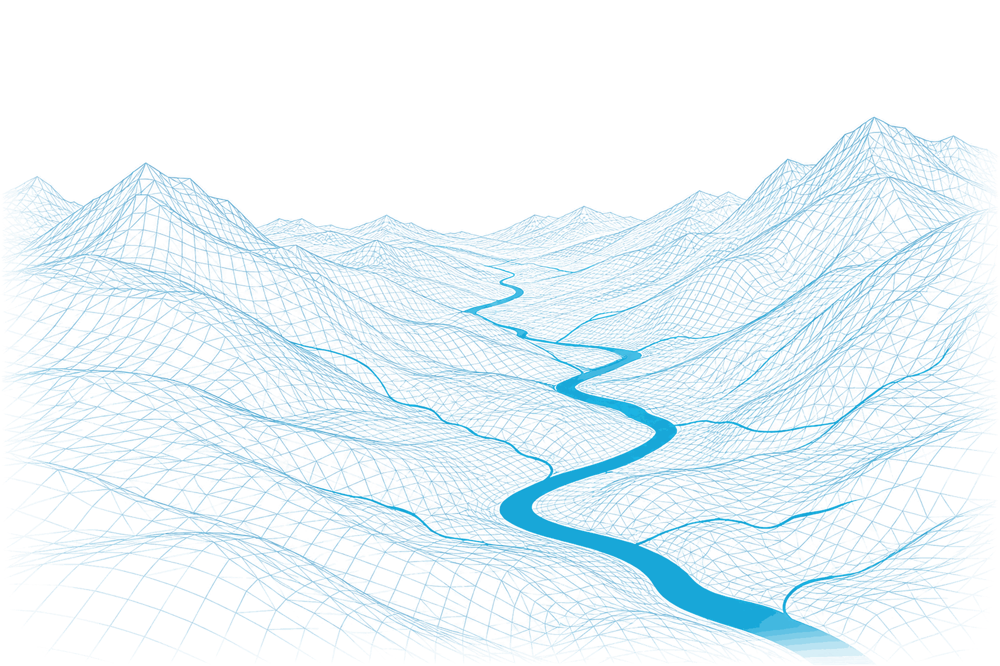
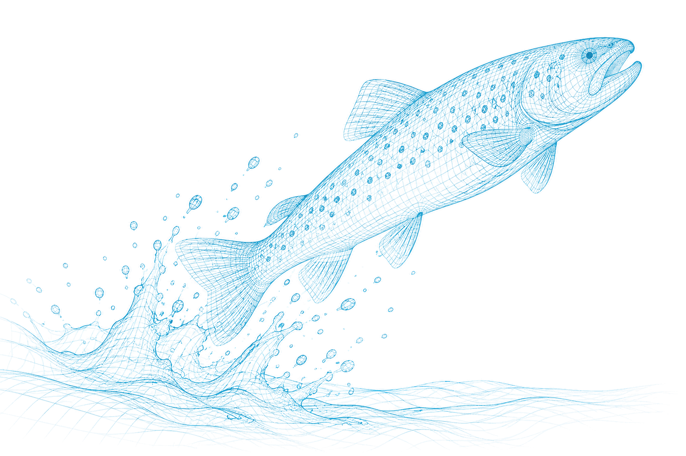
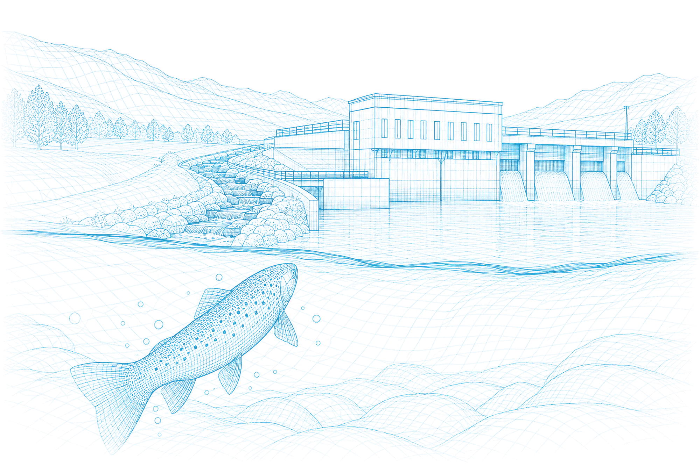
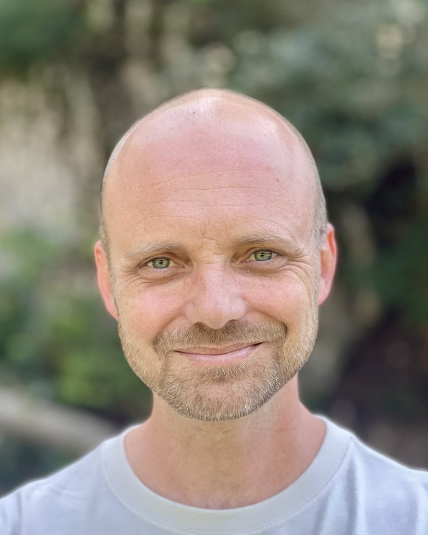

Aquatic ecology & ecohydraulics
Thalweg is an independent consultancy in aquatic ecology, specialised in restoring fish migration. Serving authorities, hydropower operators, engineering and environmental consultancies, and NGOs — from expert opinion to project management, in French, German and English.
Get in touch
Approach
Thalweg, n. — from the German Thal, “valley”, and Weg, “way”: a line following the lowest part of a valley (Merriam-Webster)
A thalweg is where the waters naturally converge. At Thalweg, it is expertise that converges — towards the solution that naturally emerges.
The law sets objectives — rehabilitate, restore, protect. Reaching them takes three things: understanding fish, knowing the possible solutions — their strengths, limits and costs — and mastering the legal and procedural framework. Thalweg brings these three perspectives together, and knows where to find the skills that complement them — giving every project the best chance of success.
The office works as an ad-hoc expert, as a reviewer or in project management support — alone or in a consortium, in whatever form the mandate requires.

Services
Hydropower rehabilitation
Deficit analysis, variants studies, management of rehabilitation procedures, coordination across the rehabilitation domains (fish migration, bedload, hydropeaking, residual flows), financing of measures and biological monitoring — from one-time expert assessments to comprehensive case management.
Concession renewal
Support and coordination of the procedure, with regulatory compliance checked at every step — a coherent file on the administrative, fish-ecology and financial fronts.
Monitoring
Precise requirements in a precise context: monitoring concept, statistical design, data analysis — all the way through to the report.
Data: analysis, automation, literature syntheses
Analysing existing datasets; automating recurring data management and analyses with custom-built tools; conducting research projects — behaviour, movements, population dynamics.
Reconciling interests
Heritage, agriculture, riparian owners, acceptance by NGOs and the public: identifying the conflicting points between diverging interests and proposing concrete solutions.
Training & science communication
Courses for professionals, outreach for project owners, talks: adapting the level of complexity to the audience and getting the key messages across.
File review
An independent look before committing further: a project owner wants to be sure a report they have received is sound; a consultancy wants to check that its file will hold up before submission. Thalweg delivers a structured review note — compliance with legal requirements and current standards, technical robustness, points to correct, priorities — built on long experience of examining files. To secure the project and save time.
Depending on the need: review alone, with a debriefing session, or support through to submission. Effort proportionate to the file — days rather than months; quote after an initial exchange.

About

Simon Gingins, biologist, PhD in animal behaviour (University of Neuchâtel). After a postdoctorate at the Max Planck Institute of Animal Behavior and the University of Konstanz — on collective fish behaviour and 3D video tracking — I spent seven years in hydropower rehabilitation: first with the canton of Fribourg, then at the Federal Office for the Environment (FOEN) as specialist for fish migration and the financing of rehabilitation measures.
From ten years of research — and some fifteen publications — I keep the practice of leading scientific projects and one reflex: choosing the method that will actually answer the question asked, with data as the referee. At FOEN, I examined rehabilitation projects from all over Switzerland — their planning, their strengths, their weaknesses — while keeping in constant touch with research and emerging technical measures.
I am founding Thalweg in 2027 to put this overview at the service of those who need it — and to put biology back at the centre of projects, where their success is decided.